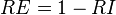

Rand error
The Rand index is a well-known measure of the similarity between two data clusterings[1]. Recently, it has been proposed as a measure of segmentation performance, since a segmentation can be regarded as a clustering of pixels[2]. More formally, define a segmentation as an integer-valued labeling of an image. Each object in a segmentation consists of a set of pixels sharing a common label.
The Rand index is defined as a measure of agreement:
Given two segmentations  and
and  of an image
of an image  with
with  pixels, we define:
pixels, we define:
-
 , the number of pairs of pixels in that are in the same object in and in the same object in (i.e., they have the same label)
, the number of pairs of pixels in that are in the same object in and in the same object in (i.e., they have the same label)
- , the number of pairs of pixels in that are in different objects in and in different objects in (i.e., they have different labels)
The Rand index, , is:

Here we instead define the closely related Rand error, which is a measure of disagreement. The Rand error (RE) is the frequency with which the two segmentations disagree over whether a pair of pixels belongs to same or different objects:
- 
Implementation in Fiji
The Rand error metric is implemented in the Trainable Weka Segmentation library. Here is an example of how to use it in a Beanshell script:
import trainableSegmentation.metrics.RandError;
import ij.IJ;
// original labels
originalLabels = IJ.openImage("/path/original-labels.tif");
// proposed (new) labels
proposedLabels = IJ.openImage("/path/proposed-labels.tif");
// threshold to binarize labels
threshold = 0.5;
metric = new RandError( originalLabels, proposedLabels );
randError = metric.getMetricValue( threshold );
IJ.log("Rand error between source image " + originalLabels.getTitle() + " and target image "
+ proposedLabels.getTitle() + " = " + randError);
See also
References
- ↑ William M. Rand (1971), "Objective criteria for the evaluation of clustering methods", Journal of the American Statistical Association 66 (36): 846–850, DOI 10.2307/2284239
- ↑ R. Unnikrishnan, C. Pantofaru, and M. Hebert (2007), "Toward objective evaluation of image segmentation algorithms", IEEE Transactions on Pattern Analysis and Machine Intelligence 29 (6): 929-944, DOI 10.1109/TPAMI.2007.1046